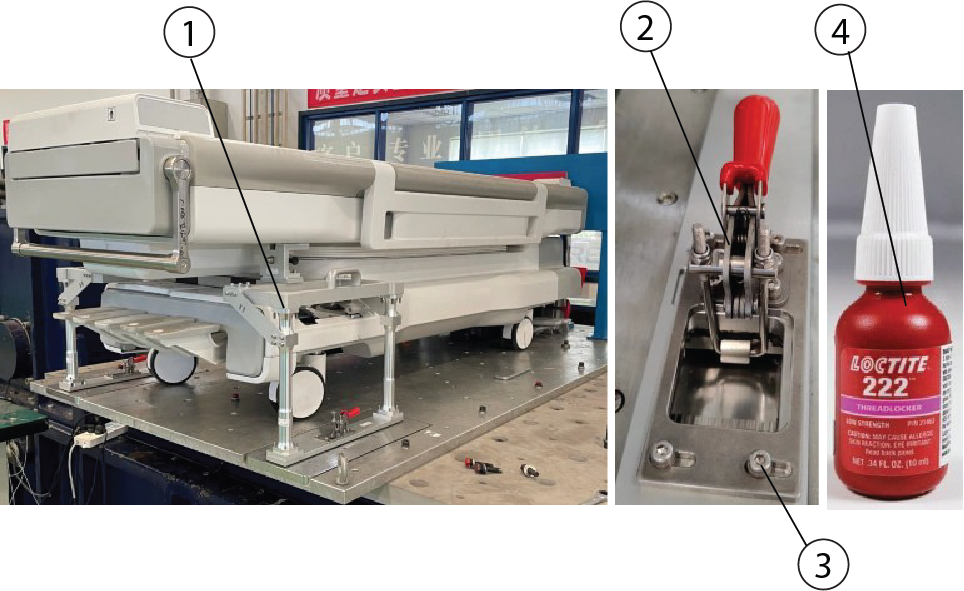
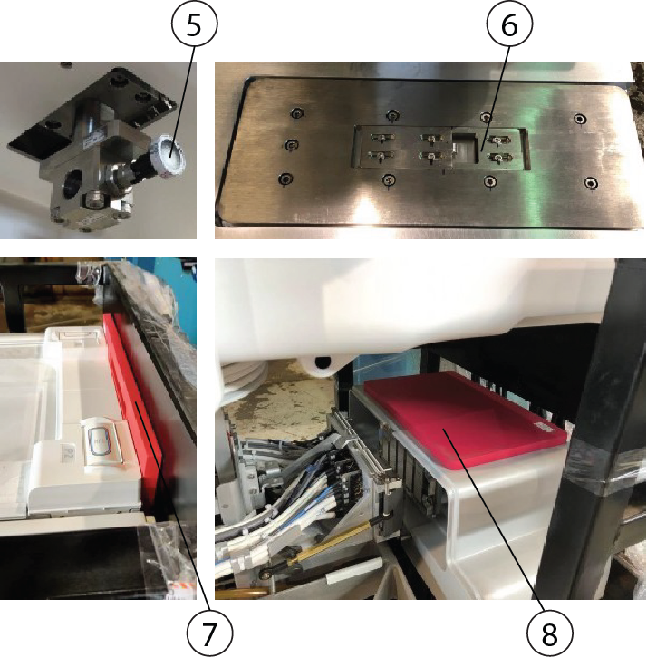
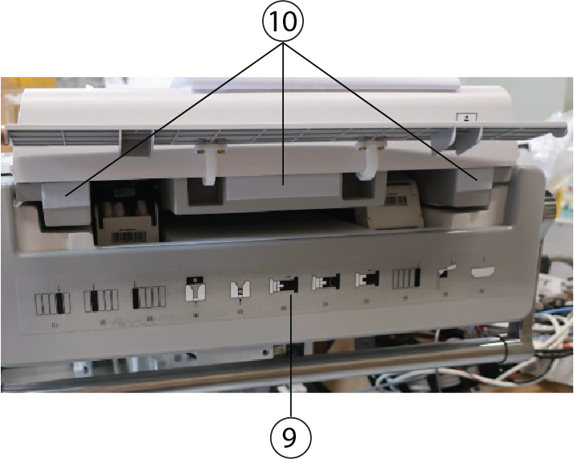
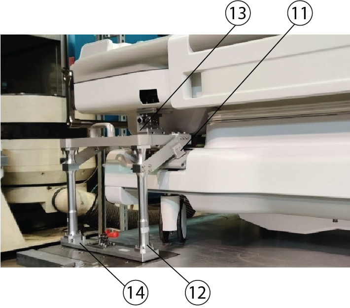
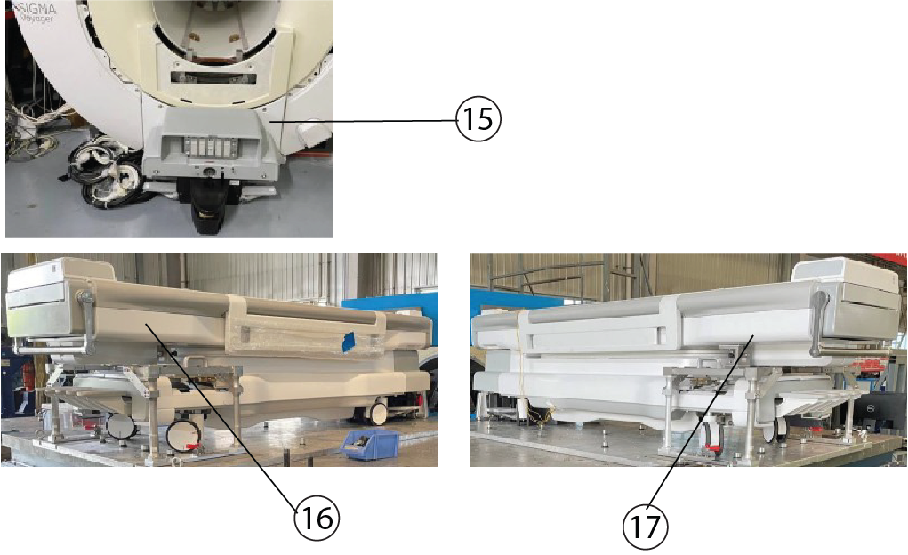
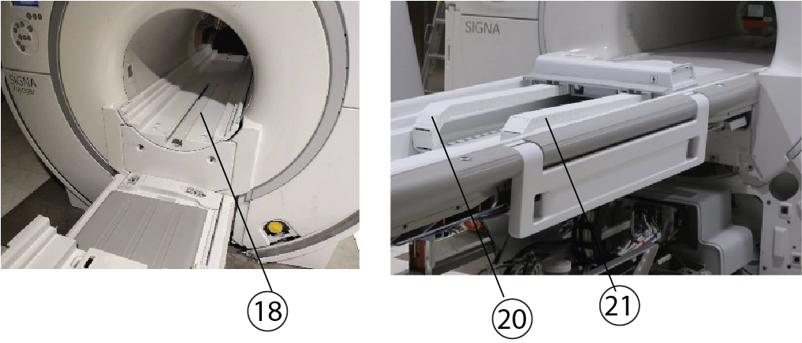
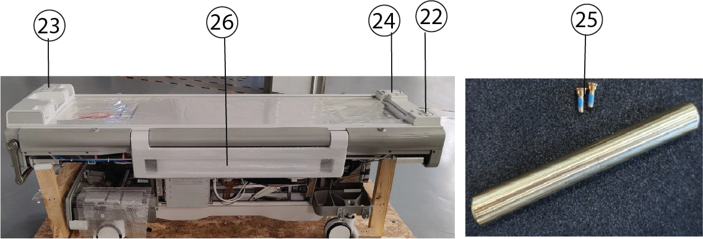
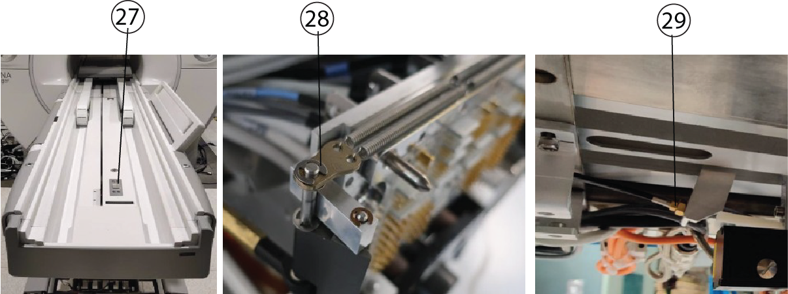

- 00000018WIA302EE880GYZ
- id_20350941.6
- Feb 14, 2022 8:26:07 AM
Dockable Patient Table - Mobile Site








| Item | Part Number | Description |
|---|---|---|
| 1 | 5945500 | Voyager Mobile Fixture Assembly |
| 2 | 5945500-112 | Destaco Clamp w/ Toggle Lock - U Hook Clamp Voyager Addition B Table Fixture 2206-M4N-14 NORD-LOCK LOCKING WASHER, M4 STAINLESS STEEL RoHS FASTENER |
| 3 | ||
| 4 | 46-170683P1 | Loctite 222 Adhesive |
| 5 | 5945500-20 | Fixture Table Interface Assembly LH |
| 5945500-120 | Fixture Table Interface Assembly RH | |
| 6 | 5945500-635 | Open Faced Clamp Hook |
| 7 | 5945500-27 | Voyager Mobile Fixture Foam |
| 5945500-28 | Voyager Mobile Fixture Foam Thin | |
| 8 | 5945500-131 | Dock Block Front |
| 9 | 5874075 | Motus table guidance labels for mobile sites |
| 10 | 5461383-2 | Felt, Damping Material for Voyager Addition with Motus Table |
| 11 | 5945500-76 | Brake Holder Shim |
| 12 | 5945500-48 | Fixture Support Column Shim |
| 13 | 5945500-303 | C-Arm Shim |
| 14 | 5945500-10 | Baseplate w/ rubber pad |
| 15 | 5867760 | Collector for Voyager mobile Dock cover |
| 16 | 7700500-8301 | RH TABLE SIDE COVER, MOTUS TABLE |
| 17 | 7700500-8331 | LH TABLE SIDE COVER, MOTUS TABLE |
| 18 | 5948000-300 | One Piece RTM Motus Bridge Assembly - Voyager Traditional Enclosure |
| 20 | 5867539-100 | FRU Collector - 1.5T P2/P4 Cable Track Assembly first used on Motus on Voyager Mobile |
| 21 | 5867539-102 | FRU Collector - 1.5T PE/P1/P3 Cable Track Assembly first used on Motus on Voyager Mobile |
| 22 | 5150668-92 | P-Port Turn-up Cover FRU KIT (first used on Premier 3T P2) (Motus Voyager P2 Cover) |
| 23 | 5150668-93 | P-Port Turn-up Cover FRU KIT (first used on Premier 3T P3) (Motus Voyager P4 Cover) |
| 24 | 5150668-95 | P-Port Turn-up Cover FRU KIT (first used on Voyager 1.5T P1) (Motus Voyager P1 Cover) |
| 25 | 5150668-100 | Counterweight collector with screw for P-port turn-up cover |
| 26 | 5774922-600 | Motus Arm Board Assembly |
| 27 | 5796733-100 | Flipper Assembly |
| 28 | 5879154 | Stainless steel 304 ¼ inch retaining ring / E Clip |
| 29 | 5146521-100 | New Cable Sleeve with end cap |
| 5946673 | Strap Rail |